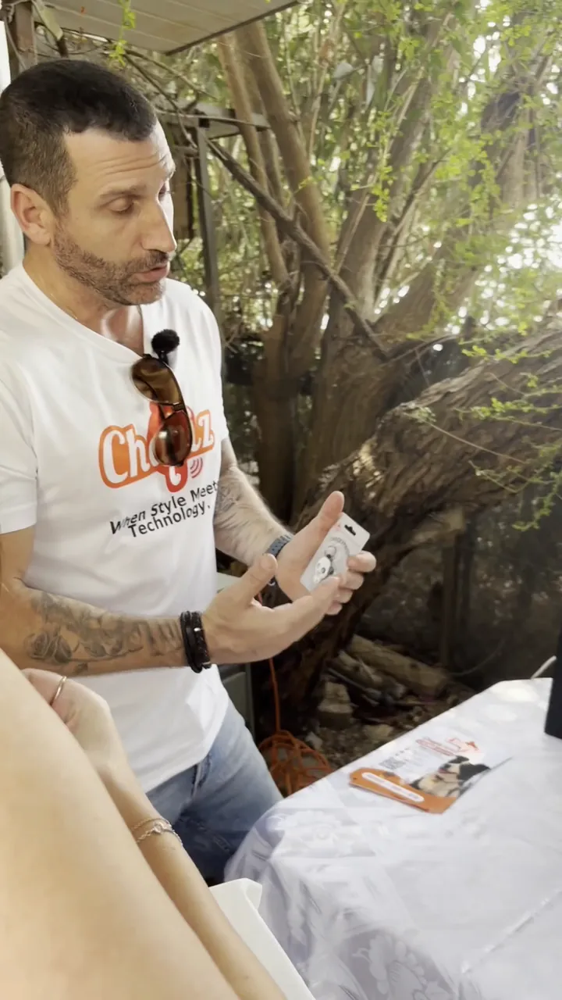

הסיפור שלנו
נולד מפוסטים על כלבים שאבדו
בתקופת המלחמה והאזעקות, קבוצות הפייסבוק התמלאו בעשרות פוסטים ביום על כלבים שנמצאו ברחוב, ואף אחד לא ידע של מי הם. כלב לא יכול לתת את המספר של הבעלים, ומי שמצא אותו נשאר עם כלב מבוהל ובלי כתובת.
המייסדים של צ'אפיז מגיעים מעולם בעלי החיים, וחיפשו פתרון פשוט: תג שכל אחד ברחוב יודע לקרוא, שעובד בלי סוללה, ושגם נראה טוב על הכלב. ככה נולדו חמש הדמויות של צ'אפיז.